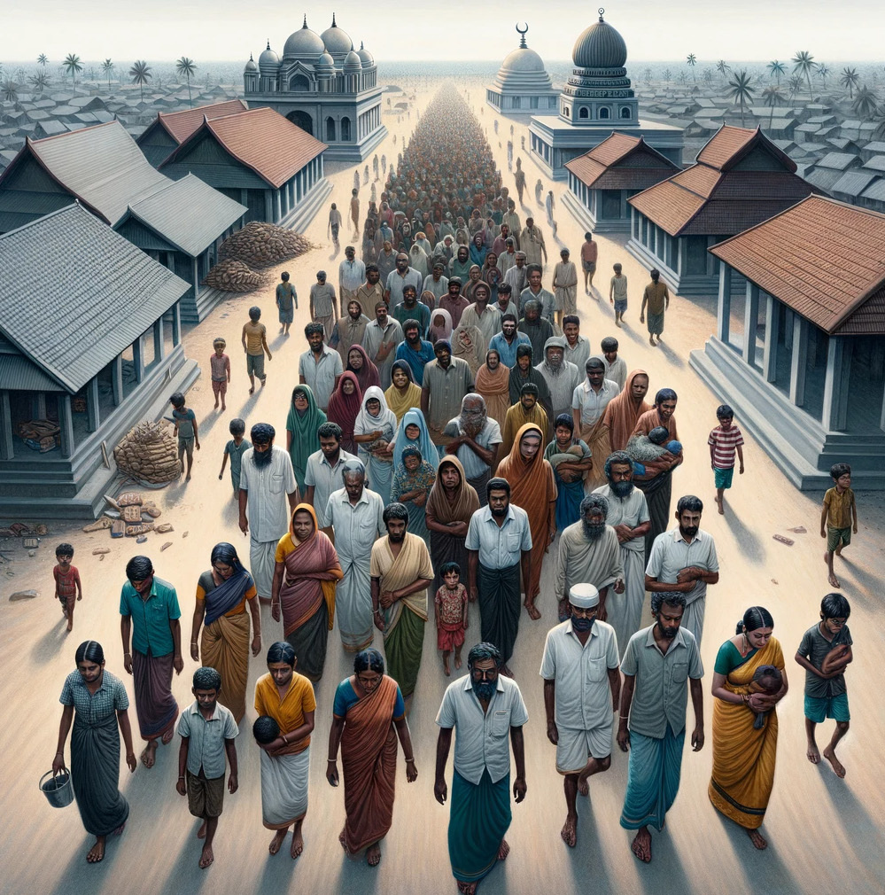
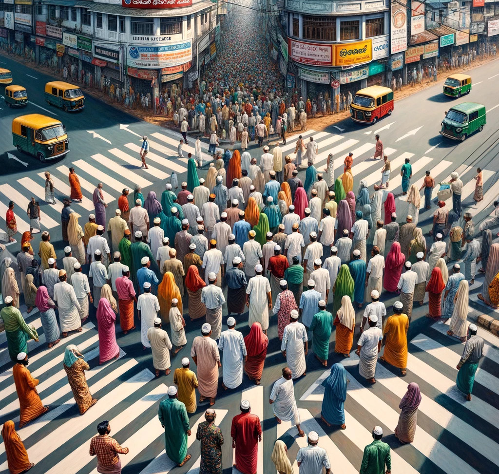
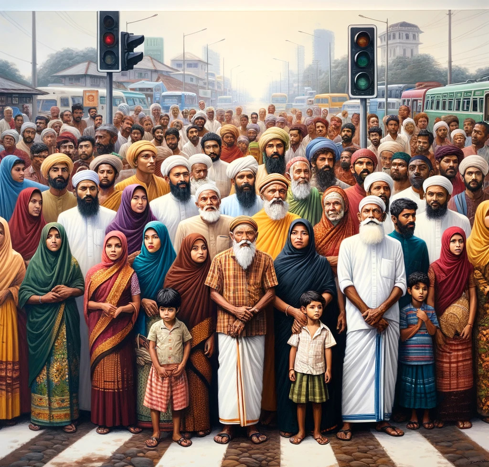
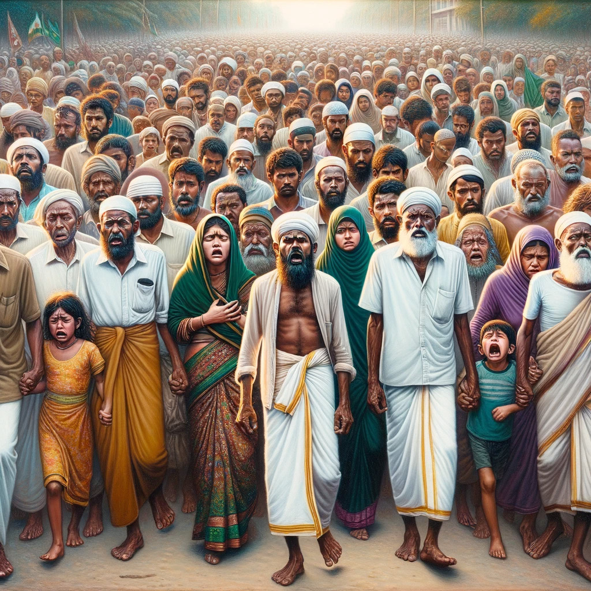
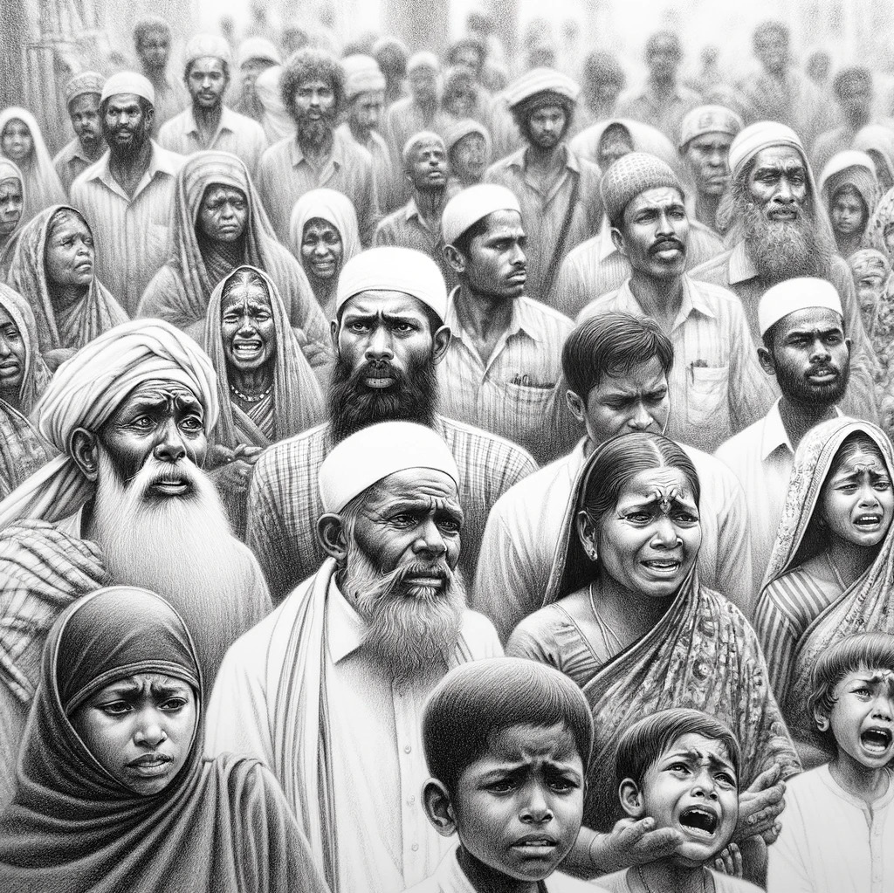
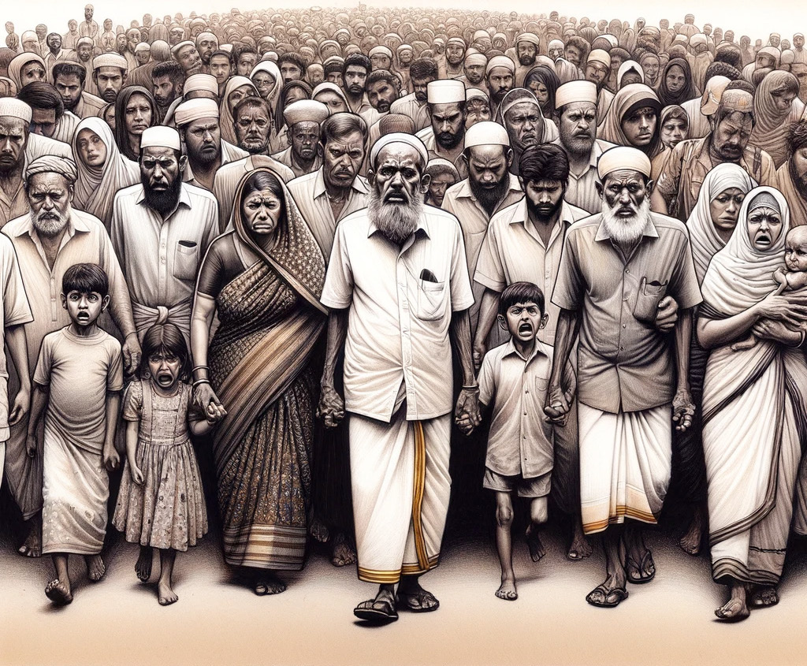

A Wound Unhealed: 33 Years Since the LTTE's Expulsion of Muslims
A Wound Unhealed: 33 Years Since the LTTE's Expulsion of Muslims
Jaffna Monitor hellojaffnamonitor@gmail.com 15 A Wound Unhealed: 33 Years Since the LTTE's Expulsion of Muslims R eflecting on my upbringing in Jaffna during the late 1980s, my understanding of our com- munity underwent a profound transformation during a visit to Colombo in 2002. It was at the 'Peace Bridge' event amidst a fleeting pause in the conflict, where I first meaningfully interacted with the Muslim community. Meeting a fellow student who shared his early years in Jaffna disrupted my previously held belief that Jaffna was solely Tamil. This encounter sparked a deeper curiosity about the diverse tapestry of Jaffna's past. A poignant symbol of this was found in the annals of the Jaffna Hindu College's sports record book. Amid its pages, the name 'Zabarullah' stood out, a re- cord holder in the 100, 200, and 400-meter races from the 1970s. This intriguing discovery raised questions about the heritage and contributions of Muslims in Jaffna's prestigious institutions. EDITOR'S NOTE

Jaffna Monitor hellojaffnamonitor@gmail.com 16 My journey then led me to the stark reality of a refugee camp in Puttalam, Sri Lanka, where I met Abdul Rahim. His story, a testament to the rich, multicultural fabric of Jaffna, painted a vivid picture of a life that once was. Born in 1965, Abdul Rahim's childhood was one of cultural har- mony. His Muslim identity seamlessly intertwined with the Hindu traditions around him, from celebrating Deepavali to participating in the Nallur Kandaswamy Kovil Festival. The communal spirit extended to religious observances as well, with Hindu neighbours drawn to his home by the tantalizing aromas of Ramadan feasts. This harmony extended to the political aspirations of the time. Abdul Rahim's family, along with a significant seg- ment of Jaffna's Muslim community, fervently supported the vision of Tamil Eelam. This commitment was not just ideological but deeply personal. His elder brother, Mu- hammad Sabir, was an active member of the LTTE cadre, dedicating his life to the pursuit of this shared dream. However, this shared dream was brutally upended in Oc- tober 1990 when the LTTE, in a drastic and tragic turn of events, turned against the Muslim community in Jaffna. The ultimatum issued was not only to leave their homes within two hours but also to leave behind a lifetime of memories and possessions. In this forced exodus, the community was stripped of both their physical belongings and a significant part of their identity. As a Tamil from Jaffna, I feel it is incumbent upon us to ac- knowledge our collective responsibility in this heinous act. Our silence and inaction contributed to the perpetuation of this injustice. The time is now for the Sri Lankan govern- ment, Tamil diaspora, and concerned authorities to facili- tate a peaceful return for these displaced individuals. It is a moral imperative to restore the dignity and rights of those uprooted, ensuring their rightful place in the land they once called home. In our series of articles, we delve deeper into this dark chapter of Sri Lankan history, aiming to shed light on the stories of those affected and the path to reconciliation and restoration. It is a journey of coming to terms with our past, confronting uncomfortable truths, and striving towards a future where such tragedies are never repeated. fzpad; G+q;Fd;wd; Kaniyan Pungundran Editor- Jaffna Monitor Dear Readers,
We regret to inform you that the second part of our series 'The Deep Roots of Tamil Buddhism in Sri Lanka' will not be featured in the December edition of the Jaffna Monitor. This decision is due to page constraints in this month's publication.
We understand that many of you have been eagerly anticipating this installment, and we apologize for any inconvenience this may cause. We are committed to bringing you this important piece and are working to include it in a future edition.
Thank you for your understanding and continued support.
Sincerely, The Editorial Team, Jaffna Monitor Editor's Note:


Jaffna Monitor hellojaffnamonitor@gmail.com 17 The LTTE's Unforgivable Sin: The Muslim Expulsion by: fzpad; G+q;Fd;wd; Kaniyan Pungundran

Jaffna Monitor hellojaffnamonitor@gmail.com 18 Jaffna's Fateful Day On October 30, 1990, an ominous tension permeated the air in Jaffna around 10:30 a.m. LTTE trucks began making rounds in areas where Muslims lived, such as Sonaka Theru, Ottumadam, Bommaively, and a few other neighborhoods. Their loudspeakers blared directives for Muslim families to assemble at the Jinnah Stadium of Osmania College by noon. These trucks crisscrossed the streets of these localities, ensuring their stern message reached every Muslim household. Armed LTTE members began patrolling the streets, with some making direct house-to- house announcements. People quickly dropped their activities and rushed to the assembly point. The Ultimatum By 12:30 p.m., a high-ranking LTTE leader named Anchaneyar ( Ilamparithi) appeared. He addressed the anxious crowd. His message was brief and precise; the LTTE high command had, citing security concerns, decided that all Muslims should vacate Jaffna within a mere two-hour window. Any failure to comply would lead to severe consequences. Within the LTTE's lexicon, such severe consequences were often a dire euphemism for a death sentence. The crowd was left stunned, and no additional clarification was provided. At this moment, a segment of the public naively started believing that the army was on the brink of invading Jaffna. They thought that the "our boys," were attempting to safeguard the Muslim community by removing them from potential war zones. Amidst this confusion, a few individuals, including the parents whose children had been LTTE fighters and had sacrificed their lives for the Tamil Eelam cause, stepped forward. Among them was Abdul Rahim's father. They sought to engage Ilamparithi in conversation, hoping for clarity. To drive home his message, Ilamparithi fired his gun into the air repeatedly, and several of his bodyguards mirrored his action. The Looting and Plunder Abdul Rahim's father and others like him held onto hope. They referred to the LTTE as "Our boys," with a passionate belief that these boys would never harm them. Yet, many Muslims, acquainted with the LTTE's way of operation, took precautionary measures, wisely packing up their possessions, including money and jewelry, ready for whatever might ensue. Initially, Muslims were not given specific limitations regarding what they could carry. Naturally, they packed all their valuables. As they assembled at the "Ainthuchanthi" junction, they faced a new directive. LTTE male and female cadres began insisting that the Muslim residents surrender all their valuables. When some individuals protested the confiscation of their hard-earned assets, they were met with a curt reply from the LTTE cadres: "Whatever is earned in Tamil Eelam belongs to Tamil Eelam." When some tried to protest, they were swiftly silenced by the menacing display of advanced weaponry and stern threats. Bags filled with clothes and other possessions were seized. All forms of monetary assets and crucial documents like property deeds and checkbooks were taken away. The harsh measures went beyond mere orders. In acts of degradation, women and girls faced the forcible stripping of their jewellery. Female cadres of the LTTE would violently tear earrings from the ears of Muslim women, resulting in wounds and bleeding. The ruthlessness extended even to children, from whom every watch was taken. In some instances, both men and women endured additional humiliation, being completely disrobed to guarantee they were not hiding gold on their bodies. Amid this chaos, wealthy Muslim businessmen became targets. At least 35 of them were abducted, and a select few jewellers faced unspeakable torture, forced to disclose the whereabouts of hidden gold. The horror culminated with one being savagely beaten to death, a morbid warning to others.

Jaffna Monitor hellojaffnamonitor@gmail.com 19 The Spread of Forced Evictions The forced eviction of Muslims from the Jaffna peninsula started in Chavakachcheri on October 15, 1990, reaching its climax in Jaffna town by October 30. An event leading up to these incidents happened on September 4, 1990. Close to the Chavakachcheri mosque, a confrontation arose between some Tamils and Muslims. Young Muslim individuals captured a few of the involved Tamils and handed them to the LTTE. Nevertheless, the LTTE released these individuals, cautioning the Muslim community not to provoke the Tamils. Subsequent to this event, the LTTE reported finding 75 swords in a store owned by a noted Muslim businessman. The credibility of these claims, however, is debated. The LTTE contended that they found the swords in a shop belonging to a Muslim trader whose vehicles regularly travelled between the town and Colombo. The LTTE used this finding as "proof" of a Muslim collaboration with the Sinhala government. But the rationale for amassing 75 swords, especially compared to the LTTE's superior arsenal, raises questions. A Misguided Notion of Protection: Perhaps most perplexing is the argument posited by a fringe group of LTTE advocates who suggest that the expulsion was, paradoxically, an act of care. They claim that the LTTE was shielding the Muslims from the horrors of War by removing them from conflict zones. This narrative, however, is starkly at odds with the lived experience of those who were uprooted, losing their homes, possessions, and livelihoods overnight. Independent Returns: Northern Muslims Resettle Without Aid Despite the absence of dedicated initiatives for the resettlement of Muslims forced out of the North, with the advent of peace, these families began to independently return to their ancestral lands. While a number of families in Jaffna have benefited from government support in their resettlement efforts, it has been reported that numerous others have not been able to return home, primarily because no systematic resettlement scheme was put into place for the displaced Muslim communities.
